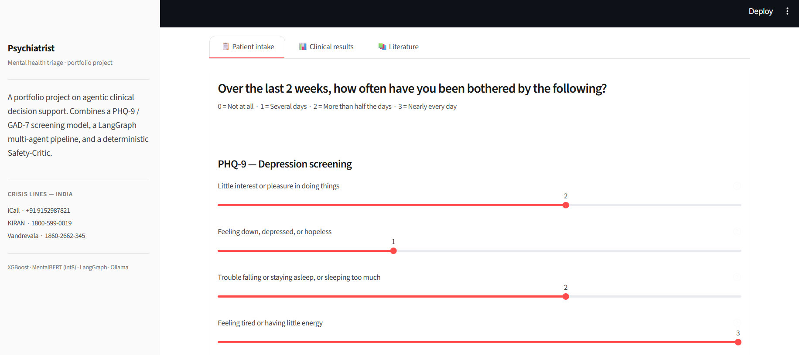
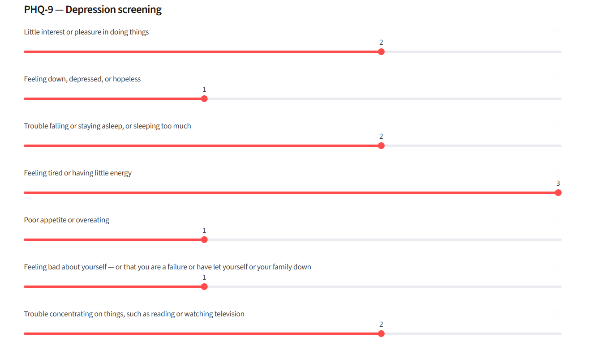
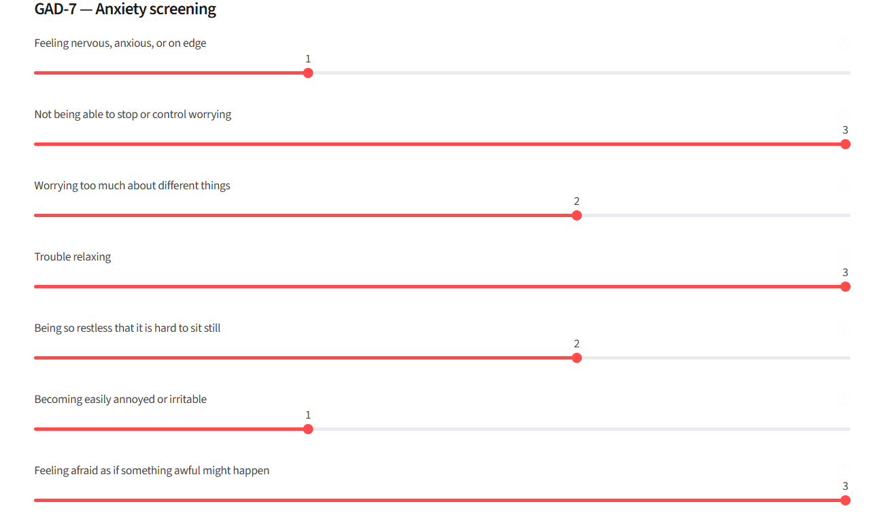
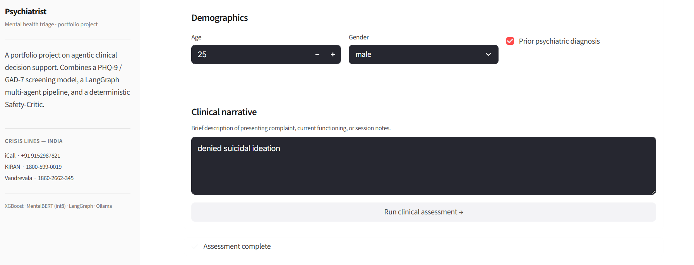
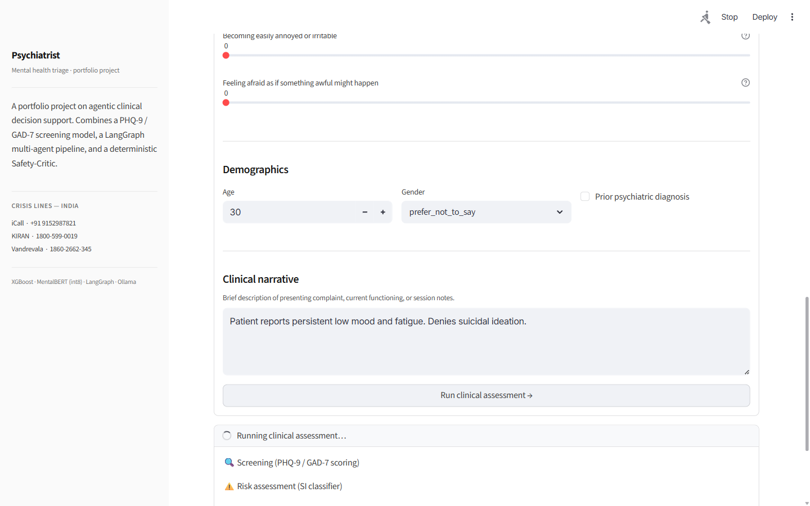
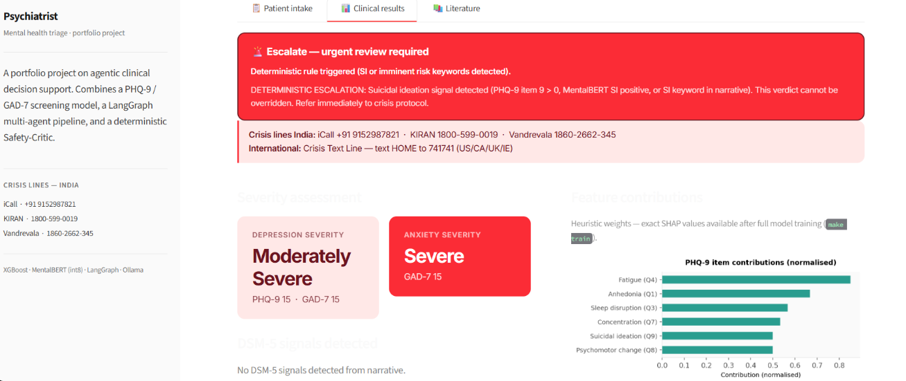
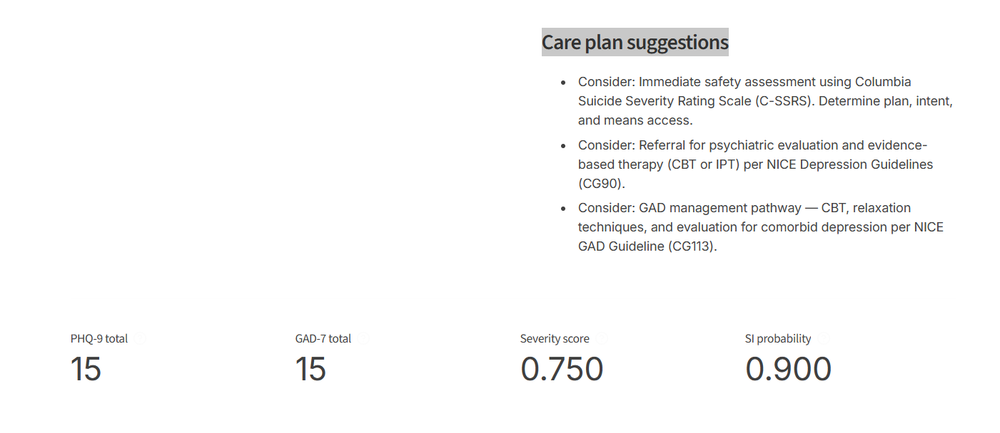

PHQ-9 / GAD-7 screening · LangGraph multi-agent pipeline · MentalBERT SI detection · deterministic Safety Critic. Runs entirely on CPU, no API keys needed.

No branching, no retries. Each agent reads from a shared state object, does its job, and passes the baton. The Safety Critic always runs last.
Validates questionnaire inputs, computes PHQ-9 and GAD-7 totals, flags item 9 for suicidal ideation.
Rule-basedXGBoost severity classifier + MentalBERT (int8) suicidal ideation probability from the clinical note.
XGBoost · MentalBERTHybrid FAISS + BM25 retrieval over DSM-5 summaries and PubMed abstracts for grounded citations.
RAG · FAISS · BM25Llama 3.2 via Ollama generates actionable suggestions. Falls back to templated recommendations if offline.
Llama 3.2 · OllamaDeterministic SI keyword rules fire first. LLM verifier reviews the care plan second. Escalation cannot be overridden.
Deterministic + LLMFrom intake to verdict — a complete walkthrough of the pipeline running on a sample case.






Every choice has a reason — no buzzword-driven decisions.
Defines the agent pipeline as an explicit DAG. Each node is a Python class you can test in isolation.
Agent orchestrationPre-trained on mental health text, not general-purpose BERT. Meaningfully better at suicidal ideation detection.
Clinical NLPXGBoost genuinely outperforms deep models on tabular PHQ-9 / GAD-7 data. The MLP is a comparison baseline.
Severity classificationSemantic search alone misses exact clinical terminology. Keyword search alone misses meaning. Both together works.
RAG retrievalFully local LLM inference. No API keys, no per-call cost, no data leaving the machine.
LLM · Care planExperiment tracking for model training, drift monitoring to flag when the input distribution shifts in production.
MLOpsThe hardest part of this project wasn't the ML — it was making sure no combination of model failures, Ollama downtime, or LLM hallucinations could suppress a genuine escalation.
Layer 1 of the Safety Critic scans the narrative sentence by sentence for suicidal ideation keywords before any LLM touches the text. If it fires, the verdict is escalate — full stop.
The LLM verifier in Layer 2 can upgrade a verdict, never downgrade one. An escalation set by Layer 1 or PHQ-9 item 9 cannot be talked away by the care-plan agent or anything downstream.
A hand-curated suite covering overt and subtle SI patterns runs in CI on every push. It needs 100% recall. A model change that lowers recall on this suite does not merge.
No Ollama? Templated care plans. No MentalBERT checkpoint? Regex keyword fallback. No XGBoost model? Rules-based severity banding. The safety layer always runs regardless.
No pre-trained model checkpoints required to run. Install, generate synthetic data, and start the UI in three commands.